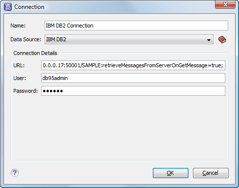

The dialog box for configuring a database connection is displayed.
Figure 1. Connection Configuration Dialog Box

Enter a unique name for the connection.
Select an IBM DB2 data source in the Data Source
drop-down menu.
Enter the connection details.
Enter the URL to the installed IBM DB2 engine.
Enter the user name to access the IBM DB2 engine.
Enter the password to access the IBM DB2 engine.
Click the OK button to finish the
connection configuration.
To view your connection, go to the Data Source Explorer view(if the view is not displayed, it can be opened by selecting
it from the Window > Show View menu) or switch to the
Databaseperspective.
 New button in the Connections panel.
New button in the Connections panel.